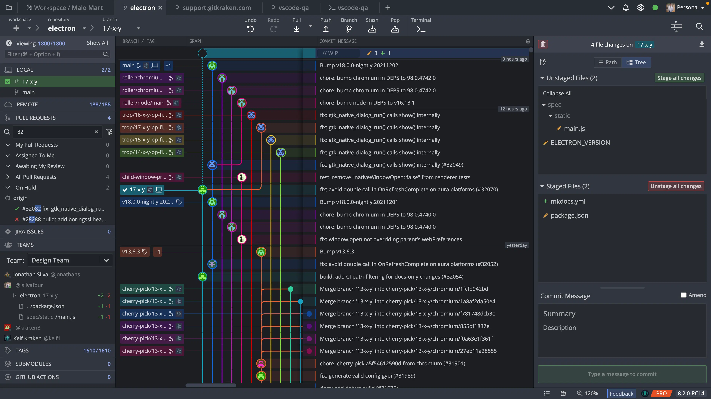
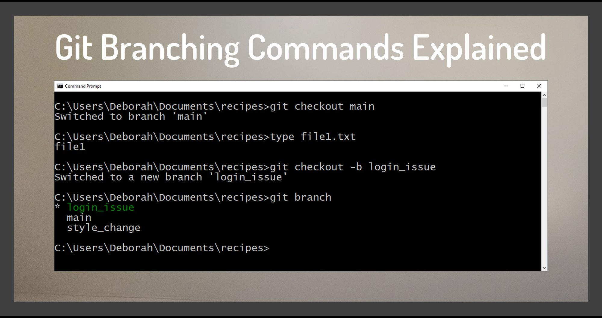
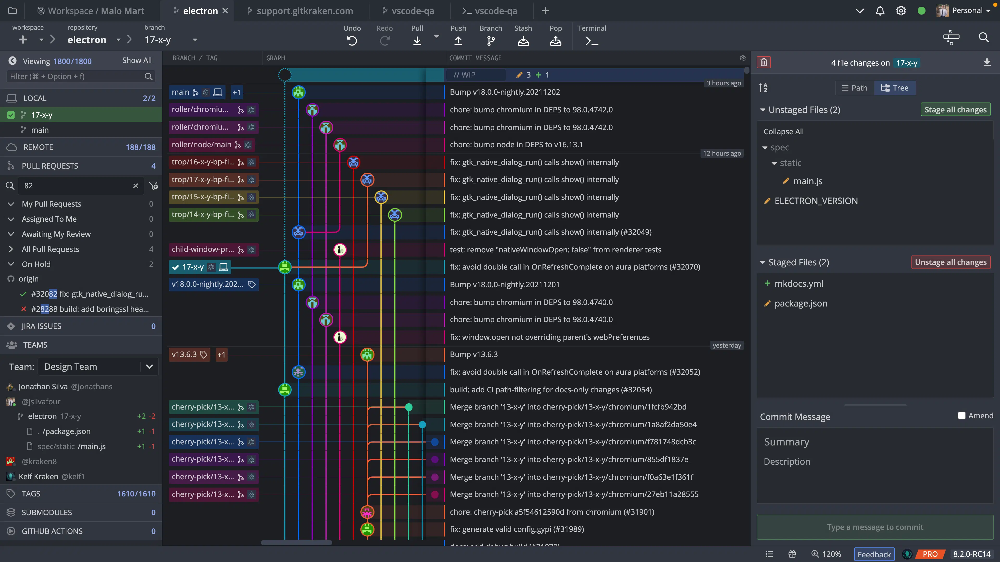
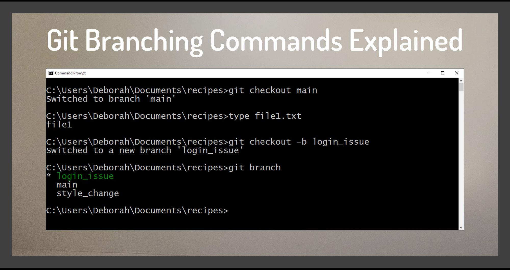

Git
Git es un sistema de control de versiones distribuido de código abierto y gratuito diseñado para manejar todo, desde proyectos pequeños hasta muy grandes, con velocidad y eficiencia.
 



GitHub
GitHub es una plataforma de desarrollo colaborativo para alojar proyectos utilizando el sistema de control de versiones Git. Se utiliza principalmente para la creación de código fuente de programas de computadora.
GitHub Education
GitHub Education ayuda a las escuelas a enseñar y a los estudiantes a aprender. Con la mejor herramienta de desarrollo en el mundo, los estudiantes pueden aprender a través de la práctica y la participación en el mundo real.